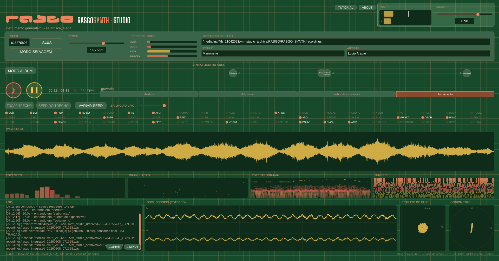

La seed est un point de départ
Explorez tempo, gammes, rythme, matière sonore et forme narrative. La seed ne constitue pas la recette complète : réglages, modes et état enregistré interviennent aussi.
Instrument musical indépendant · C++ / JUCE
Prenez des risques, puis faites sonner.
Rasgo Synth Studio construit des compositions à partir d'une seed, de décisions musicales et de processus sonores en relation. Il appartient à RASGO : une famille d'instruments originaux de Lucio de Araujo, dédiée à l'expérimentation, à la composition et à l'apprentissage.
Version expérimentale 0.1.0 · Linux, Windows et macOS
HÉNON · a=1.4 · b=0.3 · Illustration de la carte de Hénon — pas l’audio de l’application

01 · RASGO SYNTH STUDIO
Explorez tempo, gammes, rythme, matière sonore et forme narrative. La seed ne constitue pas la recette complète : réglages, modes et état enregistré interviennent aussi.
Percussions, voix graves, matière mélodique et textures peuvent entrer, se retirer et interagir. La sélection des modules modifie la palette disponible ; leur disponibilité ne garantit pas une audibilité égale.
Générez une pièce ou explorez un ensemble en mode album. Écoutez, comparez les trajectoires et conservez les fichiers et les informations associées pour vos recherches.
Un album permet de travailler un ensemble de pièces. Vous pouvez chercher des liens entre elles ou rapprocher des tempos, durées et matières différents. L'ordre d'écoute compte aussi : une piste courte peut laisser de la place à une plus longue ; un passage dense prend un autre sens après un silence.
Dans Studio, le thème oriente l'ensemble et chaque piste suit son propre parcours. Choisissez le nombre de pistes, faites varier le BPM initial et planifiez, si vous le souhaitez, la durée totale et sa répartition. Le choix des modules détermine les sources qui pourront participer à l'album. Commencez par deux pistes et écoutez ce qui les rapproche ou les sépare.
Apprendre à composer un album →02 · SEED → WAV
Le manuel et le guide d'ensemble sont maintenus dans les quatre langues. Le catalogue technique historique reste en portugais ; c'est une référence de recherche, pas un décompte de modules audibles.
Des paquets distincts sont préparés pour Linux x86_64, Windows x64 et macOS Intel/Apple Silicon. Choisissez le format et l'architecture dans le guide d'installation. Écran de référence : 1366 × 768, avec défilement dans les petites fenêtres. MIDI, carte graphique dédiée et internet ne sont pas nécessaires pour composer.
Repère provisoire : 8 Gio de RAM, avec 4 Gio disponibles ; 16 Gio conseillés pour les albums. Ce n'est pas un minimum certifié. Prévoir 500 Mio pour application/marge de travail, plus environ 1,1 Go par heure d'audio.
Linux exige glibc 2.35+ et GLIBCXX_3.4.30. Démarrage et fermeture passent sous Debian 12, Ubuntu 24.04, Fedora et Arch avec écran virtuel. Windows et le même DMG universel Mac passent les tests automatisés de rendu, chemins accentués et fermeture. Cela ne remplace pas installation manuelle et écoute. AppImage a été testé extrait, pas monté via FUSE.
Choisir, ouvrir et installer selon son système →
Studio 0.1.0 est disponible comme version expérimentale, avec paquets, sources et sommes de contrôle. Un seul DMG Universal 2 convient aux Mac Intel et Apple Silicon, sans Rosetta. Le code source est public.
Certaines voix peuvent rester discrètes dans le mixage, tandis que des percussions ressortent. Des timbres peuvent aussi revenir d'une pièce à l'autre. Écoutez à un volume confortable et comparez les choix de modules. Bruit, silence et rupture font partie des possibilités musicales de l'instrument.
RASGO réunit code original, recherche artistique, composition et apprentissage. Les crédits indiquent les références et influences. Le code du projet utilise AGPL-3.0-or-later ; JUCE et les autres composants conservent leurs licences propres.